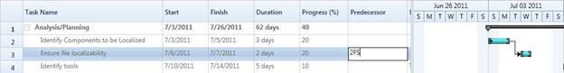

Essential Gantt provides support for dynamic editing of predecessors in the Grid area. By using this feature, you can dynamically add the predecessor on-demand basis to Gantt. You can add/remove the predecessor in the corresponding cell in the GanttGrid.
You can add/remove/update the predecessors and resources of tasks at run time. Initially, the Gantt is loaded with the Predecessor/Resource information in the underlying collection and you can update this information whenever you need.
You can edit the predecessor information from the GanttGrid. For resource, you can edit in the underlying source, Gantt will listen to the change in the underlying source and reflect it in both GanttGrid and GanttChart.
Editing Predecessors
While creating a new predecessor in Grid, it should be in the following format:
{Task ID}{GanttTaskRelationship}
Here the {GanttTaskRelationship} is any one of the following:
· SS
· FS
· SF
· FF
The following are what you should use for different relationships:
· Use “SS” to define the “StartToStart” relationship
· Use “FS” to define the “FinishToStart” relationship
· Use “SF” to define the “StartToFinish” relationship
· Use “FF” to define the “FinishToFinish” relationship
If any other data is added, the current editing relationship will be deleted and only the valid predecessors remain for the task.
Editing Resources
As of now, resources cannot be edited in Grid. You can update the resource collection in the underlying source whenever you need. Gantt will listen to the changes in the collection and will update the GanttGrid and GanttChart accordingly.
Use Case Scenario
This helps to change the dependency relationships and resources of the tasks dynamically.

Figure 23: Dependency Relationships of Tasks
Adding Dynamic Predecessors and Resources to an Application
The dynamic editing of predecessor will be automatically included in the Gantt by default. There is no need to provide any additional data for that. The following codes illustrate this:
|
[XAML] <gantt:GanttControl Grid.Row="1" x:Name="Gantt" ItemsSource="{Binding GanttItemSource}" ToolTipTemplate="{StaticResource toolTipTemplate}"> <gantt:GanttControl.TaskAttributeMapping> <gantt:TaskAttributeMapping TaskIdMapping="Id" TaskNameMapping="Name" DurationMapping="Duration" StartDateMapping="StDate" FinishDateMapping="EndDate" ChildMapping="ChildTask" ProgressMapping="Complete" PredecessorMapping="Predecessor" ResourceInfoMapping="Resource"> </gantt:TaskAttributeMapping> </gantt:GanttControl.TaskAttributeMapping> </gantt:GanttControl>
|
The following code will illustrate how to dynamically add resource and predecessor in the underlying collection:
|
[C#] // To Add the Dynamic Predecessors this.viewModel.GanttItemSource[0].ChildTask[2].Predecessor.Add(new Predecessor() { GanttTaskIndex = 4, GanttTaskRelationship = GanttTaskRelationship.FinishToStart }); //To Add the Dynamic Resources this.viewModel.GanttItemSource[0].ChildTask[2].Resource.Add(new Resource { ID = 3, Name = "Resource3" });
|